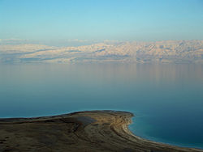
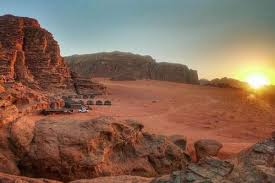

Jordan Tourism
- Aqaba
- WadiRam
- Petra
- Dead Sea
Welcome
Welcom the magic tourism on the sea
Aqaba is the only coastal city in Jordan and the largest and most populous city on the Gulf of Aqaba.
Situated in southernmost Jordan, Aqaba is the administrative and plays role in the development of the Jordanian economy.
.jpg)
The Dead Sea Sea of Salt, is a salt lake bordered by Jordan to the West Bank to the west. and shores are 430.5 below sea level.
Earth's lowest elevation
The desert climate of the region, which is characterized by extreme heat, drought and high evaporation rates,
plays a major role in increasing the concentration of these salts in it.
It has made the Dead Sea a global tourist attraction,
especially in terms of medical tourism. The region contains thousands of hotel rooms, which are concentrated in the northeastern part of Jordan.

Welcom to happy tourism in the past
Wadi Rum (Wadi al-Qamar), is a valley cut into the sandstone and granite rock in southern Jordan,
it is the largest wadi in Jordan.
Wadi Rum Protected Area was named a UNESCO World Heritage Site in 2011.

Petra is historical and archaeological city in southern Jordan.
Petra lies around Jabal Al-Madbah in a basin surrounded by mountains which form the eastern flank of the Arabah valley,
that runs from the Dead Sea to the Gulf of Petra's proximity to the trade routes by establishing it as a major regional trading hub.
.jpg)
Latest tourist offers:
- one rooms with a view
- Two rooms with a view
- three rooms with a view
Booking of one star hotels
- one rooms
- Two rooms
- three rooms
- Cars
- Tourist Group
- Other Services
Enjoy with us in the most beautiful trip
- New register
- Update Information
- Delete
Home page!